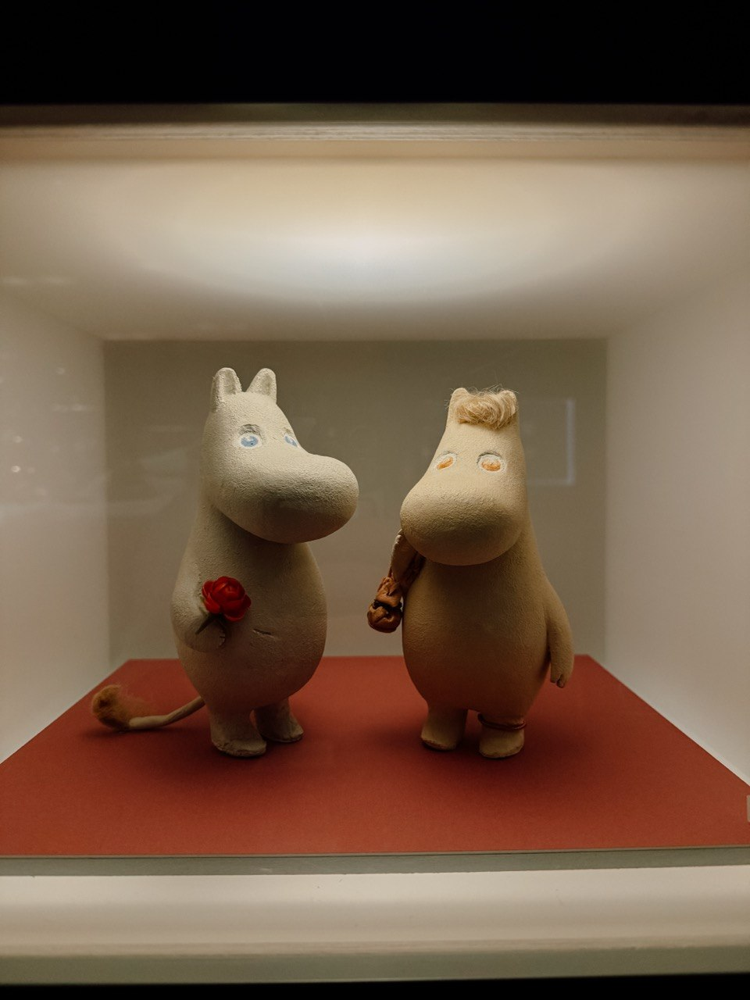
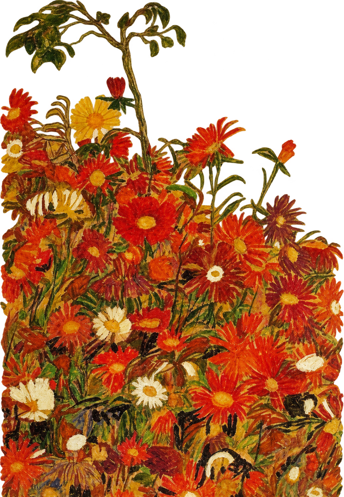

Machine unlearning
Understanding and evaluating how learned models forget information, and what it means to remove the influence of training data.
I'm Matteo. I study machine unlearning and the complex dynamics of neural networks.
Exploring what models retain, how they forget, and how chaotic behavior emerges.
Nearly identical beginnings.
Different trajectories.
And how does complex behavior emerge from simple rules?
Understanding and evaluating how learned models forget information, and what it means to remove the influence of training data.
Nonlinear behavior, sensitivity to initial conditions, and the emergence of complex trajectories.
Learning, memory, and the dynamics of artificial neural systems.
Peer-reviewed publications, papers, and citation records.
Complete metadata available for each entry.
A living research dictionary. Start with machine unlearning, explore the methods and guarantees, and follow the connections into complex dynamics.
Explore all 16 conceptsMachine unlearning Chaos & dynamics
Select a concept to open its definition. Connections reflect the existing Fieldnotes relationships.
Conferences, conversations, and a personal photographic record of the places where research takes me.

Foundational reading behind the Fieldnotes Browse the bibliography ↗
